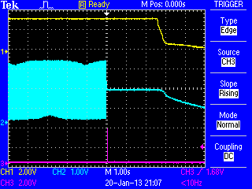
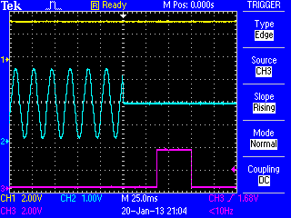

I have replicated the test done here. My results after calibration:
- For measurements below 50W: error >34%
- For measurements 50W - 100W: error >5%
- For measurements 100W - 240 W: 2% < error < 5%
- For measurements above the 300W: error < 1% (more less)
The results in a graph:

I used this sketch that does all the calculations and you only need to copy and paste from the serial monitor into the spread sheet
Carlos
Re: emonTx accuracy test
Thank you, Carlos. I've added your results to the original article.
Re: emonTx accuracy test
Quite encouraged by this because my house background usage is around 500W.
Does anyone here ever get down to 50W or below?
P.
Re: emonTx accuracy test
Has anybody looked into the effect that polling has on accuracy?
It seems to me that if you only look at 20 cycles every 5 seconds or so you're going to miss a lot of stuff. I'm thinking of situations like a 3kw heater thermostat closing for 4 seconds just after an emonTx transmission. This will not register any power usage at all.
Re: emonTx accuracy test
This is something I already mentioned some time ago, but got no reaction. Everything like a flat iron, cooking plate, heater, etc. will pulse its power usage in similar time intervals as the measurements are taken. This can give absolutely erratic results, depending on the 'overlap' between measuring and power usage.
So a cooking plate with 2kw nominal power and 50% duty cycle can give a reading of anything between 0W and 2kW. If the duty cycle and measuring cycle are in synch, it can effectively show 0W or 2000W for longer time intervals.
Re: emonTx accuracy test
Yes, it does seem a bit pointless to go to the trouble of measuring voltage and correcting for phase error and then to ignore over 90% of the available information.
The problem is made worse by the transmission system because any lost data packets will have the effect of sampling even less often.
Re: emonTx accuracy test
Using ACK's for critical values like pulse counting, power consumption? RFM2Pi has already support for this.
Re: emonTx accuracy test
Agreed. I have to point out that the original concept was for a battery-powered monitor, and sleeping for 4.8 s out of 5 was critical for battery life. The general thinking, applications and usage has advanced, but the original concept has remained.
This is OK for local display of present consumption, you're probably thinking about accumulated energy.
What I'd like to know, based on Fluppie's comment about ACKs, is why the accumulation isn't done in the emonTx? I haven't thought this through, but if the emonTx sent the total accumulated data since the last transmission that was acknowledged, there's scope for continuous measurement with minimal risk of lost data, whether between samples, from missing packets, or whatever, and no problem with clogging the RF band or the network. (One immediate problem: what do you do if the data gets through but the ACK doesn't? - serial numbered packets and ACKs? This could get complicated! But if you sent a packet every minute or ten, you could put about as much protection on as you liked. You'd still need fast 'instantanous' values for display, but the display could maintain its own accumulator in between and synchronise with the full update).
Re: emonTx accuracy test
I'm with you on that one Robert, I'm already in the process of building the accumulation into my emonTx script. My approach is slightly different though. I'm going to have kW/h registers in the emonTx just like a normal meter. These values will then be transmitted at regular intervals. The display then only has to subtract the value from the start of the day to get daily use. It doesn't matter if packets are lost since each transmitted value will carry all the information you need.
The only problem I can see is power cuts so I'm considering saving the registers to EEPROM at regular intervals.
I fully understand about the original battery concept and see the reasoning but, as you say, things have move on.
Re: emonTx accuracy test
I like that approach, but like my suggestion it needs work to integrate into emoncms. Bear in mind the limited life of EEPROM. Each reading is too often, hourly would give you a life of about 10 years: ( "The EEPROM memory has a specified life of 100,000 write/erase cycles, so you may need to be careful about how often you write to it.")
Re: emonTx accuracy test
I suppose ideally you'd only want to write to the EEPROM when the power goes off like a car ECU does. Mmm, I wonder if the power supply capacitors would hold up long enough to write to the EEPROM if you detected power failure via the a/c input - might be fun to try.
Sorry about hijacking your thread BTW cagabi.
Re: emonTx accuracy test
What about adding some RAM (doesn't wear like EEPROM) memory to the board, do calculations and storage over there, add a 0,5-1F supercap (like the Intel 320 SSD) to hold the RAM's values for a while in case of a power outage. Then emonTx has time to write RAM content to EEPROM or (micro)SD card?
Re: emonTx accuracy test
Quote: Each reading is too often, hourly would give you a life of about 10 years...
Supposed the 100.000 cycles EEPROM write cycles are meant per byte (the datasheet is not very explicit here, but this is the smallest unit that can be individually reprogrammed), then it would also be possible to write to a different location each time. Writing a long value takes 4 Bytes, 64 long values use up 256 Bytes. Writing every minute means ~24 writes per 'location' per day or less than 10000 per year. 100000 cycles would then last for more than ten years with 1 minute resolution.
Re: emonTx accuracy test
The other day i bought a Pulse sensor with the idea of comparing kWh calculated from the CT and the measured from the meter. Also i would be measuring 20, 40, 60 and 80 cycles and check if it makes any difference. Once it´s done i will put the link to the public dashboard.
Cheers,
carlos
Re: emonTx accuracy test
I wrote: "I wonder if the power supply capacitors would hold up long enough to write to the EEPROM if you detected power failure via the a/c input - might be fun to try."
I now have the kWh registers working in the emonTx in my system so I gave the above a try today - and it works a treat!
Here's the power fail timing...

This is using a cheap USB PSU. The top trace is the emonTx 3.3V supply and the middle trace is the 9V a/c input. As you can see the 3.3V holds up for about 2.5s and since it only takes 3.3ms to write a byte to EEPROM this is loads of time.
The bottom trace is a test output which is high during the EEPROM write process, which is triggered as soon as loss of a/c is detected. Here it is in more detail...

This is for 12 EEPROM byte writes for 3 32-bit registers for imported Wh, exported Wh and solar Wh. Since this snapshot I've also added a checksum.
Re: emonTx accuracy test
Martin, how do detect the loss of the AC? Do you have any code to share for this? Many thanks...
Re: emonTx accuracy test
Nothing clever Lemongrass, in my PLLsketch the variable cycleVsquared is a measure of the voltage at the end of each cycle. All I do is check to see if this variable is below a constant threshold at the end of a mains cycle and if it is then I declare loss of AC. This gives a response time of 20ms at the UK frequency of 50Hz.
Re: emonTx accuracy test
Yes, quite often on lelvel of 50w - during summer days my base load is 400-600w for three phases. One of the phase has constant 230w and other around 100-150w leaving third phase to 100w or less. This excellent study did not reveal if error margin is same for <50w or also for 1000..1050w. For normal use i think the chosen burden has too low value as the main fuses I have are 3 x 25A.